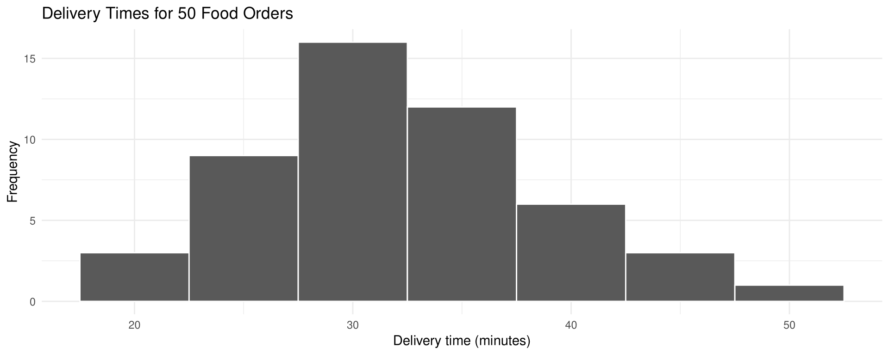
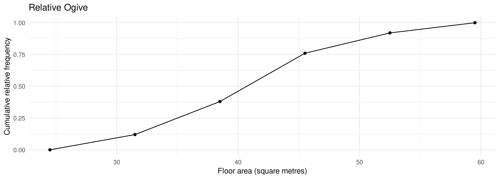
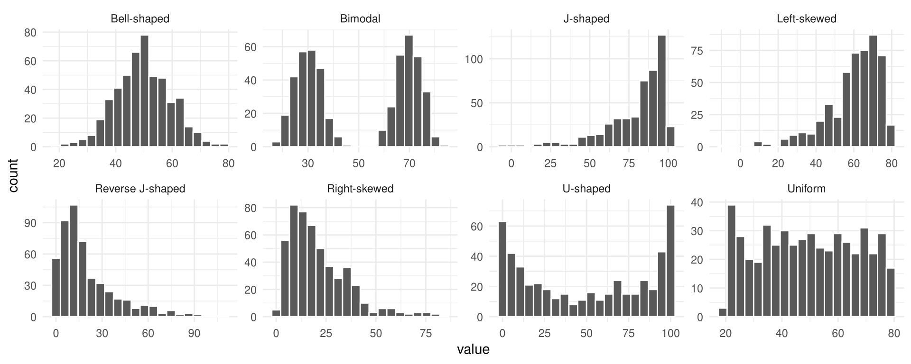
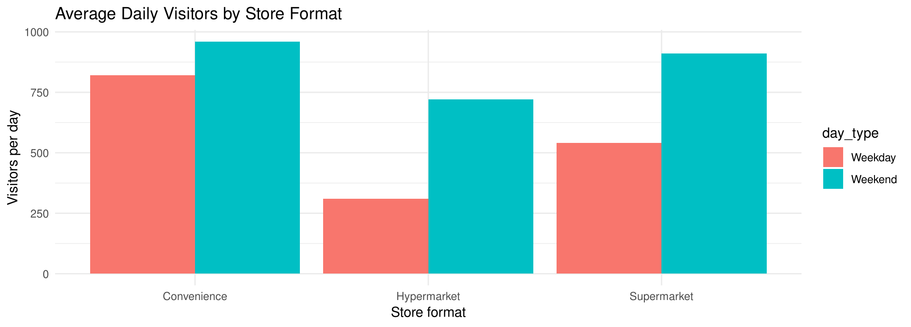
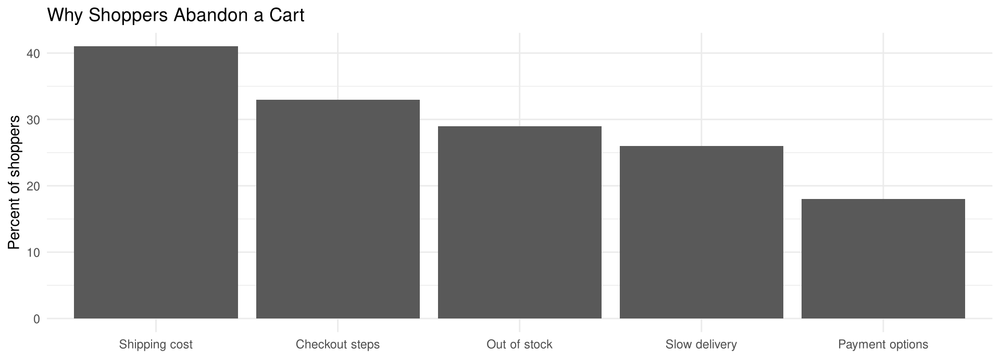
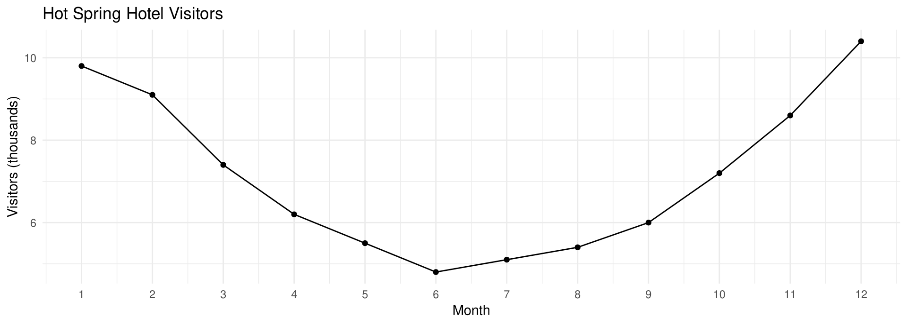
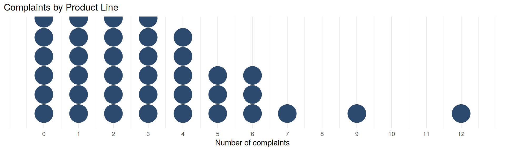
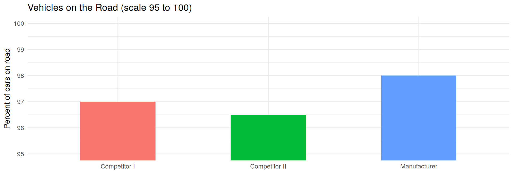
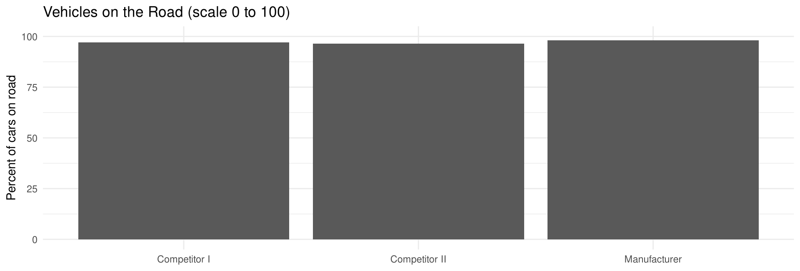

payments
C D E G M
13 7 9 3 8 payments
C D E G M
32.5 17.5 22.5 7.5 20.0 Chapter 2: Frequency Distributions and Graphs
Shih Chien University
2026-10-08
Chapter 2 shows how to organize data into frequency distributions and how to present data with charts and graphs, so that patterns which are invisible in raw data become easy to see.
| Section | Topics |
|---|---|
| 2-1 | Organizing data: categorical, grouped, and ungrouped frequency distributions; cumulative frequencies |
| 2-2 | Histograms, frequency polygons, and ogives; relative frequency graphs; distribution shapes |
| 2-3 | Other types of graphs: bar graphs, Pareto charts, time series graphs, pie graphs, dotplots, stem and leaf plots; misleading graphs |
After completing this chapter, you should be able to
When a researcher first gathers data for a variable, the values are in their original, unprocessed form.
Raw Data
When data are collected in original form, they are called raw data.
Suppose a researcher studies the ages of the 50 wealthiest people in the world. Little information can be obtained from looking at the raw list below, so the researcher organizes it into a frequency distribution.
45 46 64 57 85 88 45 89 67 56
92 51 71 54 48 81 58 55 62 38
27 66 76 55 69 55 56 64 81 38
54 44 54 75 46 49 68 91 56 68
61 68 78 61 83 46 47 83 71 62Frequency Distribution
A frequency distribution is the organization of raw data in table form, using classes and frequencies.
| Class limits | Frequency |
|---|---|
| 27–35 | 1 |
| 36–44 | 3 |
| 45–53 | 9 |
| 54–62 | 15 |
| 63–71 | 10 |
| 72–80 | 3 |
| 81–89 | 7 |
| 90–98 | 2 |
| Total | 50 |
Now a general observation can be made: the majority of the wealthy people in the study are 45 years old or older. The values 27, 35, 36, 44, … are called class limits.
| Type | Used when |
|---|---|
| Categorical | The data can be placed in specific categories — nominal- or ordinal-level data such as political affiliation, religious affiliation, or major field of study |
| Grouped | The range of the data is large, so classes more than one unit wide are needed |
| Ungrouped | The range of the data is small, so each class is a single data value |
The categorical frequency distribution is used for data that can be placed in specific categories.
Percentage and Relative Frequency
Find the percentage of values in each class with
\% = \frac{f}{n} \cdot 100
where f is the frequency of the class and n is the total number of values. Percentages are not normally part of a frequency distribution, but they can be added since they are used in graphs such as pie graphs. The decimal equivalent of a percent is called a relative frequency.
Payment Methods at a Convenience Store
Forty customers at a campus convenience store were asked how they paid for their purchase. Construct a categorical frequency distribution for the data and summarize the results. Use these classes: C = cash, E = stored-value card, M = mobile payment, D = credit card, and G = gift voucher. (hypothetical data)
C E M C D E G C E M
C D C E M E C G M D
E C M D C E M C D E
M C G D E C M C C DBack to Example 2-11
Solution
Solve
Since the data are categorical, discrete classes are used: C, E, M, D, and G. Tally the data, count the tallies, and compute \% = \frac{f}{n}\cdot 100.
Solution
Interpretation
For the sample, most customers paid in cash (13 people, 32.5%) and the smallest number used a gift voucher (3 people, 7.5%). The stored-value card was used by 9 (22.5%), mobile payment by 8 (20%), and a credit card by 7 (17.5%). It is a good idea to add the Percent column to check that it sums to 100% — although it will not always do so because of rounding.
When the range of the data is large, the data must be grouped into classes that are more than one unit in width. The result is a grouped frequency distribution.
| Class limits | Class boundaries | Frequency |
|---|---|---|
| 58–64 | 57.5–64.5 | 1 |
| 65–71 | 64.5–71.5 | 6 |
| 72–78 | 71.5–78.5 | 10 |
| 79–85 | 78.5–85.5 | 14 |
| 86–92 | 85.5–92.5 | 12 |
| 93–99 | 92.5–99.5 | 5 |
| 100–106 | 99.5–106.5 | 2 |
| Total | 50 |
Blood glucose levels (mg/dL) for 50 randomly selected college students.
Limits and Boundaries
Rule of Thumb for Boundaries
The class limits should have the same decimal place value as the data, but the class boundaries should have one additional place value and end in a 5.
\text{Lower limit} - 0.5 = 58 - 0.5 = 57.5 \qquad \text{Upper limit} + 0.5 = 64 + 0.5 = 64.5
If the data are in tenths, limits of 7.8–8.8 give boundaries of 7.75–8.85 (subtract and add 0.05).
Width and Midpoint
The class width is found by subtracting the lower (or upper) class limit of one class from the lower (or upper) class limit of the next class: 65 - 58 = 7. Equivalently, subtract the lower boundary from the upper boundary of a class: 64.5 - 57.5 = 7.
The class midpoint X_m is
X_m = \frac{\text{lower boundary} + \text{upper boundary}}{2} \quad\text{or}\quad X_m = \frac{\text{lower limit} + \text{upper limit}}{2}
For the first glucose class, X_m = \dfrac{57.5 + 64.5}{2} = 61 or \dfrac{58 + 64}{2} = 61.
Caution
Do not subtract the limits of a single class. It will result in an incorrect answer — 64 - 58 = 6, not the true width of 7.
If the class width is an even number, the midpoint is in tenths: with boundaries 5.5 and 11.5, X_m = \dfrac{5.5 + 11.5}{2} = 8.5.
Six Rules
Open-Ended Distribution
A frequency distribution in which the first class has no specific lower limit, or the last class has no specific upper limit, is called an open-ended distribution.
| Age | Frequency | Minutes | Frequency | |
|---|---|---|---|---|
| 10–20 | 3 | Below 110 | 16 | |
| 21–31 | 6 | 110–114 | 24 | |
| 32–42 | 4 | 115–119 | 38 | |
| 43–53 | 10 | 120–124 | 14 | |
| 54 and above | 8 | 125–129 | 5 |
Anybody 54 years or older is tallied in the last age class; any minute value below 110 is tallied in the first minutes class.
Constructing a Grouped Frequency Distribution
Step 1 — Determine the classes.
Step 2 — Tally the data.
Step 3 — Find the numerical frequencies from the tallies, and find the cumulative frequencies.
Delivery Times for Online Food Orders
These data represent the delivery times, in minutes, for 50 orders handled by a food-delivery platform on one weekday evening. Construct a grouped frequency distribution for the data, using 7 classes. (hypothetical data)
31 27 35 29 22 40 30 26 33 28
25 32 37 30 43 29 36 31 27 34
38 30 28 45 32 26 35 24 31 29
18 34 41 32 27 52 30 36 25 39
23 37 21 33 42 32 47 40 35 37Back to Example 2-4 · Example 2-5 · Example 2-6
Solution
Step 1 — Determine the classes
H = 52 and L = 18, so R = 52 - 18 = 34. With 7 classes, the width is \frac{34}{7} \approx 4.9, rounded up to 5. Starting at 18 gives lower limits 18, 23, 28, …; 23 - 1 = 22 gives the first upper limit, so the classes are 18–22, 23–27, etc. Boundaries are 17.5–22.5, 22.5–27.5, and so on.
Solution
Interpretation
The frequency distribution shows that the class 27.5–32.5 contains the largest number of delivery times (16), followed by the class 32.5–37.5 with 12 delivery times. Hence, most of the deliveries (28) took between 28 and 37 minutes.
Analyze a frequency distribution by looking for peaks — the classes with the most data values — and for extreme values, called outliers, which are large or small relative to the other data values.
Cumulative Frequency Distribution
A cumulative frequency distribution is a distribution that shows the number of data values less than or equal to a specific value (usually an upper boundary).
The values are found by adding the frequencies of the classes less than or equal to the upper class boundary of a specific class. For Example 2-2 the cumulative frequency for the first class is 0 + 3 = 3; for the second, 0 + 3 + 9 = 12; for the third, 0 + 3 + 9 + 16 = 28. A shorter way is to add the frequency of the given class to the cumulative frequency of the class below: 12 + 16 = 28.
When the range of the data values is relatively small, a frequency distribution can be constructed using single data values for each class.
Ungrouped Frequency Distribution
An ungrouped frequency distribution uses a single data value for each class, rather than a range of values.
If the data are continuous, class boundaries can still be used: subtract 0.5 from each class value to get the lower class boundary, and add 0.5 to get the upper class boundary.
Items per Shopping Basket
The data show the number of items scanned in each of 30 shopping baskets at a supermarket checkout during one lunch hour. Construct an ungrouped frequency distribution for the data and analyze the distribution. (hypothetical data)
4 9 3 5 6 4
5 3 7 4 2 6
3 5 4 8 5 3
6 4 2 5 7 4
3 6 5 4 8 7Solution
Steps 1 to 3 — Determine the classes, tally, and find the frequencies
Since the range is small (9 - 2 = 7), classes consisting of a single data value can be used: 2, 3, 4, 5, 6, 7, 8, 9.
Solution
Interpretation
In this case, seven baskets held 4 items and this was the largest frequency. Reading the cumulative frequencies: 14 baskets held fewer than 4.5 items, 27 held fewer than 7.5 items, and all 30 held fewer than 9.5 items.
Note that several different but correct frequency distributions can be constructed for the same data by using a different class width, a different number of classes, or a different starting point. Whatever method is used, classes should be mutually exclusive, continuous, exhaustive, and of equal width.
Five Reasons
The purpose of graphs in statistics is to convey the data to the viewers in pictorial form. It is easier for most people to comprehend data presented graphically than data presented numerically in tables, especially if the users have little or no statistical knowledge.
The three most commonly used graphs in research are
Constructing a Histogram, Frequency Polygon, and Ogive
Step 1. Draw and label the x and y axes.
Step 2. On the x axis, label the class boundaries of the frequency distribution for the histogram and the ogive. Label the midpoints for the frequency polygon.
Step 3. Plot the frequencies for each class, and draw the vertical bars for the histogram and the lines for the frequency polygon and ogive.
Note: the lines for the frequency polygon begin and end on the x axis, while the lines for the ogive begin on the x axis.
Histogram
The histogram is a graph that displays the data by using contiguous vertical bars (unless the frequency of a class is 0) of various heights to represent the frequencies of the classes.
Karl Pearson introduced the histogram in 1891, using it to show time concepts of the various reigns of Prime Ministers.
Delivery Times for Online Food Orders
Construct a histogram to represent the data shown for the delivery times of the 50 food orders (see Example 2-2).
| Class boundaries | Frequency |
|---|---|
| 17.5–22.5 | 3 |
| 22.5–27.5 | 9 |
| 27.5–32.5 | 16 |
| 32.5–37.5 | 12 |
| 37.5–42.5 | 6 |
| 42.5–47.5 | 3 |
| 47.5–52.5 | 1 |
Back to Example 2-5 · Example 2-6
Solution
Draw figure
Put the frequency on the y axis and the class boundaries on the x axis, then draw a vertical bar of that height for each class.

The largest class (16) is 27.5–32.5, then 12 for 32.5–37.5. The graph has one peak, with the data clustering around it.
Frequency Polygon
The frequency polygon is a graph that displays the data by using lines that connect points plotted for the frequencies at the midpoints of the classes. The frequencies are represented by the heights of the points.
The frequency polygon and the histogram are two different ways to represent the same data set; the choice is left to the discretion of the researcher.
Delivery Times for Online Food Orders
Using the frequency distribution given in Example 2-4, construct a frequency polygon.
Solution
Step 1 — Find the midpoints of each class
Midpoints are found by adding the upper and lower boundaries and dividing by 2: \frac{17.5 + 22.5}{2} = 20, \frac{22.5 + 27.5}{2} = 25, and so on.
Solution
Output figure
Connect adjacent points with line segments, then draw a line back to the x axis at the beginning and end of the graph, at the same distance that the previous and next midpoints would be located.
Cumulative Frequency and the Ogive
The cumulative frequency is the sum of the frequencies accumulated up to the upper boundary of a class in the distribution.
The ogive is a graph that represents the cumulative frequencies for the classes in a frequency distribution.
Delivery Times for Online Food Orders
Construct an ogive for the frequency distribution described in Example 2-4.
Solution
Step 1 — Find the cumulative frequency for each class
boundary cumulative
1 17.5 0
2 22.5 3
3 27.5 12
4 32.5 28
5 37.5 40
6 42.5 46
7 47.5 49
8 52.5 50Plot the cumulative frequency at each upper class boundary, then extend the graph back to the first lower class boundary, 17.5, on the x axis.
The histogram, frequency polygon, and ogive shown so far were constructed using frequencies in terms of the raw data. These distributions can be converted to proportions instead; the graphs are then called relative frequency graphs.
When to Use Relative Frequencies
Use relative frequencies when the proportion of data values falling into a class matters more than the actual number. Comparing the age distribution of Philadelphia (population 1,526,006) with Erie (population 101,786) using raw counts would make every Philadelphia bar much taller.
To convert a frequency into a relative frequency, divide the frequency for each class by the total of the frequencies. The sum of the relative frequencies is always 1.
Floor Area of Retail Units
The following frequency distribution shows the floor area, in square metres, of 50 retail units in a shopping mall. Draw a relative frequency histogram, a relative frequency polygon, and a relative ogive for the data. (hypothetical data)
| Class boundaries | Frequency |
|---|---|
| 24.5–31.5 | 6 |
| 31.5–38.5 | 13 |
| 38.5–45.5 | 19 |
| 45.5–52.5 | 8 |
| 52.5–59.5 | 4 |
| Total | 50 |
Solution
Steps 1 and 2 — Find the relative and cumulative relative frequencies
For the class 24.5–31.5 the relative frequency is \frac{6}{50} = 0.12; for 31.5–38.5 it is \frac{13}{50} = 0.26; and so on. The cumulative relative frequencies are 0.12, 0.38, 0.76, 0.92, 1.00.
Solution
Relative frequency histogram
For the histogram and ogive use the class boundaries along the x axis; for the frequency polygon use the midpoints. For the scale on the y axis, use proportions.
Solution
Relative frequency polygon
Solution
Relative ogive

The three graphs have exactly the same shapes as the corresponding frequency graphs; only the y axis has changed from counts to proportions.
The shape of a distribution decides which statistical methods fit later.
| Shape | Description |
|---|---|
| Bell-shaped (mound) | One peak, tapering at both ends; symmetric |
| Uniform | Basically flat or rectangular |
| J-shaped | Few values at the left, rising to the right |
| Reverse J-shaped | The opposite of the J-shaped distribution |
| Right-skewed (positive) | Peak at the left, tapering right |
| Left-skewed (negative) | Clustered at the right, tapering left |
| Bimodal | Two peaks of the same height |
| U-shaped | High at both ends, low in the middle |
Distributions are most often not perfectly shaped, so it is not necessary to have an exact shape but rather to identify an overall pattern.
Analyzing a Histogram or Frequency Polygon
Prepare data
set.seed(42)
shapes <- data.frame(
shape = rep(c("Bell-shaped", "Uniform", "J-shaped", "Reverse J-shaped",
"Right-skewed", "Left-skewed", "Bimodal", "U-shaped"),
each = 500),
value = c(rnorm(500, 50, 10), runif(500, 20, 80), 100 - rexp(500, 0.05),
rexp(500, 0.05), rgamma(500, 2, 0.1), 80 - rgamma(500, 2, 0.1),
rnorm(250, 30, 5), rnorm(250, 70, 5), rbeta(500, 0.4, 0.4) * 100)
)Output figure

In addition to the histogram, the frequency polygon, and the ogive, several other types of graphs are often used in statistics:
Bar Graph
A bar graph represents the data by using vertical or horizontal bars whose heights or lengths represent the frequencies of the data.
When the data are qualitative or categorical, bar graphs can be used to represent the data. A bar graph can be drawn using either horizontal or vertical bars.
Monthly Student Spending
The table shows the average amount, in NT dollars, that students in an international trade programme spend each month in four categories. Draw a horizontal and a vertical bar graph for the data. (hypothetical data)
| Category | Average spending |
|---|---|
| Meals off campus | 3,200 |
| Commuting | 1,500 |
| Mobile data plan | 750 |
| Study materials | 480 |
Solution
Prepare data
Draw and label the x and y axes. For the horizontal bar graph place the frequency scale on the x axis; for the vertical bar graph place the frequency scale on the y axis.
Bar graphs can also be used to compare data for two or more groups; these are called compound bar graphs. It is not necessary to have equal class sizes in these types of graphs.
| Store format | Weekday | Weekend |
|---|---|---|
| Convenience store | 820 | 960 |
| Supermarket | 540 | 910 |
| Hypermarket | 310 | 720 |
Average number of customers visiting one store per day, by store format. (hypothetical data)
Draw figure
store_visits <- data.frame(
format = rep(c("Convenience", "Supermarket", "Hypermarket"), each = 2),
day_type = rep(c("Weekday", "Weekend"), times = 3),
visits = c(820, 960, 540, 910, 310, 720)
)
ggplot(store_visits, aes(format, visits, fill = day_type)) +
geom_col(position = "dodge") +
labs(title = "Average Daily Visitors by Store Format",
x = "Store format", y = "Visitors per day")
The graph shows that every format is busier at the weekend, and that the weekend increase is largest for the hypermarket, whose visitor count more than doubles, and smallest for the convenience store.
Pareto Chart
A Pareto chart is used to represent a frequency distribution for a categorical variable, and the frequencies are displayed by the heights of vertical bars, which are arranged in order from highest to lowest.
Vilfredo Pareto (1848–1923) was an Italian scholar whose research on income distribution became known as Pareto’s law; the Pareto distribution is named after him.
Reasons for Abandoning an Online Cart
An online retailer asked shoppers who left items in a shopping cart why they did not complete the order. The percentage of shoppers naming each reason is shown. Draw a Pareto chart for the data. (hypothetical data)
| Reason | Percent naming it |
|---|---|
| Shipping cost | 41% |
| Slow delivery | 26% |
| Checkout steps | 33% |
| Payment options | 18% |
| Out of stock | 29% |
Solution
Step 1 — Arrange the data from largest value to smallest value
reason percent
1 Shipping cost 41
2 Checkout steps 33
3 Out of stock 29
4 Slow delivery 26
5 Payment options 18Solution
Steps 2 and 3 — Draw and label the axes, then draw vertical bars for the percents

Shipping cost is named by 41% of the shoppers, while the payment options are named by only 18% — so the retailer should look at shipping cost first.
Three Suggestions
When you analyze a Pareto chart, make comparisons by looking at the heights of the bars.
Time Series Graph
A time series graph represents data that occur over a specific period of time.
When you analyze a time series graph, look for a trend or pattern over the time period: is the line ascending (an increase over time) or descending (a decrease)? Also look at the slope, or steepness — a steep line indicates a rapid increase or decrease over that period.
Hot Spring Hotel Visitors
The data show the number of visitors, in thousands, to a hot spring hotel in each month of a one-year period. Draw a time series graph for the data and describe the results. (hypothetical data)
| Jan 9.8 | May 5.5 | Sept 6.0 | |
| Feb 9.1 | June 4.8 | Oct 7.2 | |
| Mar 7.4 | July 5.1 | Nov 8.6 | |
| Apr 6.2 | Aug 5.4 | Dec 10.4 |
Solution
Output figure
Draw line segments connecting adjacent points; do not draw a smooth curve through the points.

Visitors were highest in December, January, and February and lowest in June, so the hotel’s business clearly follows the cold season.
Two or more data sets can be compared on the same graph — a compound time series graph — by drawing two or more lines.
For example, an airline records its load factor — the percentage of seats sold — for short-haul and for long-haul routes in each year from 2018 to 2024. Two lines drawn on one pair of axes show at a glance that both fell sharply in 2020, that the short-haul line recovered first, and that the long-haul line was still below its 2018 level in 2024. (hypothetical data)
Pie Graph
A pie graph is a circle that is divided into sections or wedges according to the percentage of frequencies in each category of the distribution.
Degrees for Each Section
\text{Degrees} = \frac{f}{n} \cdot 360^\circ
where f is the frequency for each class and n is the sum of the frequencies. The degrees should sum to 360^\circ, and the percentages to 100% — although rounding can make the totals slightly off.
Hot Drinks Sold by a Convenience Store Chain
This frequency distribution shows the number of cups, in thousands, of each hot drink sold by a convenience store chain in one week. Construct a pie graph for the data. The percentage formula is the one introduced in Example 2-1. (hypothetical data)
| Drink | Cups (frequency) |
|---|---|
| Latte | 12.7 thousand |
| Americano | 9.4 thousand |
| Milk tea | 6.1 thousand |
| Black tea | 4.8 thousand |
| Hot cocoa | 3.0 thousand |
| Total | n = 36.0 thousand |
Solution
Steps 1 and 2 — Convert each frequency to degrees and to a percentage
[1] 127 94 61 48 30[1] 35.277778 26.111111 16.944444 13.333333 8.333333The degrees are 127^\circ, 94^\circ, 61^\circ, 48^\circ, and 30^\circ; the percentages are 35.3%, 26.1%, 16.9%, 13.3%, and 8.3%.
Packages Sorted by Shift
Construct and analyze a pie graph for the number of packages a distribution centre sorted on each of its three daily shifts last month. (hypothetical data)
| Shift | Frequency |
|---|---|
| 1. Morning | 3060 |
| 2. Afternoon | 3240 |
| 3. Night | 2700 |
| Total | 9000 |
Solution
Steps 1 and 2 — Find the number of degrees and the percentages for each shift
[1] 122.4 129.6 108.0[1] 34 36 30Morning: \frac{3060}{9000}\cdot 360^\circ \approx 122^\circ and 34%; Afternoon: 130^\circ and 36%; Night: 108^\circ and 30%.
Dotplot
A dotplot is a statistical graph in which each data value is plotted as a point (dot) above the horizontal axis. If the data values occur more than once, the corresponding points are plotted above one another.
Dotplots are used to show how the data values are distributed and to see whether there are any extremely high or low data values.
Complaints by Product Line
The data show the number of complaints a customer service centre logged about each of 50 product lines during one month. Draw a dotplot for the data and summarize the results. (hypothetical data)
2 1 0 3 12 1 4 1 2 5
1 0 2 1 3 6 1 0 2 1
3 9 5 2 1 4 0 2 1 0
1 4 2 3 0 1 6 2 3 7
0 2 1 3 4 5 6 3 2 4Solution
Solution
Output figure
Draw a horizontal scale, then plot each value above it, stacking repeated values on top of one another.

Most product lines drew between zero and three complaints, with 12 product lines drawing exactly one complaint — the largest frequency.
Stem and Leaf Plot
A stem and leaf plot is a data plot that uses part of the data value as the stem and part of the data value as the leaf to form groups or classes.
A data value of 34 would have 3 as the stem and 4 as the leaf; a data value of 356 would have 35 as the stem and 6 as the leaf. The stem and leaf plot has the advantage over a grouped frequency distribution of retaining the actual data while showing them in graphical form.
Customers Served at a Night Market Stall
A night market food stall recorded the number of customers it served each evening for 20 evenings. Construct a stem and leaf plot for the data. (hypothetical data)
33 22 41 13 54
08 35 31 58 26
45 32 17 38 24
51 33 47 36 42Solution
Steps 1 to 3 — Arrange the data in order, separate by leading digit, and plot
The decimal point is 1 digit(s) to the right of the |
0 | 8
1 | 37
2 | 246
3 | 1233568
4 | 1257
5 | 148scale = 2 gives each stem its own row. If there are no data values in a class, write the stem number and leave the leaf row blank — do not put a zero in the leaf row.
Solution
Interpretation
The plot shows that the distribution peaks in the center and that there are no gaps in the data. For 7 of the 20 evenings the number of customers served was between 31 and 38. The plot also shows that the stall served from a minimum of 8 customers to a maximum of 58 customers in any one evening.
When you analyze a stem and leaf plot, look for peaks and gaps, see whether the distribution is symmetric or skewed, and check the variability by looking at the spread.
Pallets Dispatched by a Distribution Centre
A distribution centre recorded the number of pallets it dispatched each day for 30 days. Construct a stem and leaf plot by using classes 50–54, 55–59, 60–64, 65–69, 70–74, and 75–79. (hypothetical data)
57 63 50 66 55
69 52 58 61 76
54 67 59 65 60
71 56 64 51 68
53 62 57 78 55
59 73 66 63 69Solution
Steps 1 to 3 — Arrange the data in order, separate by class, and plot
Because the classes are 5 units wide, each stem is repeated twice: once for the leaves 0–4 and once for the leaves 5–9.
The decimal point is 1 digit(s) to the right of the |
5 | 01234
5 | 55677899
6 | 012334
6 | 5667899
7 | 13
7 | 68The distribution has no gaps; the largest class, 55–59, contains 8 of the 30 days.
Back-to-Back Stem and Leaf Plot
Related distributions can be compared by using a back-to-back stem and leaf plot. It uses the same digits for the stems of both distributions, but the digits used for the leaves are arranged in order out from the stems on both sides.
Stem and leaf plots are part of the techniques called exploratory data analysis; more on this topic appears in Chapter 3.
Monthly Revenue of Coffee Shops in Two Cities
The monthly revenue, in hundreds of thousands of NT dollars, of two randomly selected samples of coffee shops in Taipei and Taichung is shown. Construct a back-to-back stem and leaf plot for the data and compare the distributions. (hypothetical data)
Taipei Taichung
64 57 52 45 60 45 53 44 36 47
55 38 68 50 62 61 55 40 35 32
63 44 58 70 41 54 34 51 43 36
69 53 61 66 56 48 41 39 50 72
73 58 49 45 64 58 42 66 45 55Solution
Steps 1 and 2 — Arrange each data set in order with stem()
The decimal point is 1 digit(s) to the right of the |
3 | 8
4 | 14559
5 | 02356788
6 | 012344689
7 | 03
The decimal point is 1 digit(s) to the right of the |
3 | 245669
4 | 012345578
5 | 0134558
6 | 16
7 | 2Solution
Step 3 — Put the two plots back to back and compare
| Taipei | Stem | Taichung |
|---|---|---|
| 8 | 3 | 2 4 5 6 6 9 |
| 9 5 5 4 1 | 4 | 0 1 2 3 4 5 5 7 8 |
| 8 8 7 6 5 3 2 0 | 5 | 0 1 3 4 5 5 8 |
| 9 8 6 4 4 3 2 1 0 | 6 | 1 6 |
| 3 0 | 7 | 2 |
Graphs give a visual representation that enables readers to analyze and interpret data more easily than they could simply by looking at numbers. However, inappropriately drawn graphs can misrepresent the data and lead the reader to false conclusions.
A car manufacturer’s ad stated that 98% of the vehicles it had sold in the past 10 years were still on the road, and showed a bar graph whose vertical axis ran only from 95% to 100%. Redrawn on a scale from 0 to 100%, there is hardly a noticeable difference between the manufacturer and its competitors.
Prepare data
Draw figure — the truncated scale (95% to 100%)

Output figure — the full scale (0% to 100%)

Both graphs plot exactly the same numbers. It is not wrong to truncate an axis — many times it is necessary — but the reader should be aware of it and interpret the graph accordingly.
The average number of parcels a courier at a distribution hub delivers per hour is shown for six years; it rose from 12.4 to 13.5 parcels per hour. (hypothetical data)
| Year | 2019 | 2020 | 2021 | 2022 | 2023 | 2024 |
|---|---|---|---|---|---|---|
| Parcels per hour | 12.4 | 12.7 | 12.9 | 13.0 | 13.2 | 13.5 |
On a y axis running from 0 to 20 the increase looks slight; spreading out the scale so that it runs only from 12 to 14 in steps of 0.2 makes the same data values look like a much larger increase.
Another misleading technique exaggerates a one-dimensional increase by showing it in two dimensions.
Suppose a logistics firm’s daily parcel volume grew from 20,000 to 60,000 — three times as large (hypothetical data). Drawn as two bars, the change is compared by the heights of the bars, which is one dimension, so the taller bar is three times the shorter one. Drawn as two circles whose diameters are in the same 1-to-3 ratio, the difference looks far larger, because the eye compares the areas of the circles, and the larger area is nine times the smaller one.
Caution
It is not wrong to truncate a scale or to represent data by two-dimensional pictures — but when these techniques are used, the reader should be cautious of the conclusions drawn from the graph. Before accepting a graph, check:
| Graph type | Best used for |
|---|---|
| Histogram | Grouped frequencies; contiguous vertical bars |
| Frequency polygon | Frequencies at midpoints, joined by lines |
| Ogive | Cumulative frequencies at upper boundaries |
| Bar graph | Categorical data; horizontal or vertical bars |
| Pareto chart | Categorical data, bars highest to lowest |
| Time series graph | Data occurring over a period of time |
| Pie graph | The relationship of the parts to the whole |
| Dotplot | Each value as a dot; spotting extreme values |
| Stem and leaf plot | Keeps the actual values and shows the shape |
Chapter 2 Vocabulary
bar graph · categorical frequency distribution · class · class boundaries · class midpoint · class width · compound bar graphs · cumulative frequency · cumulative frequency distribution · dotplot · frequency · frequency distribution · frequency polygon · grouped frequency distribution · histogram · lower class limit · ogive · open-ended distribution · Pareto chart · pie graph · raw data · relative frequency graph · stem and leaf plot · time series graph · ungrouped frequency distribution · upper class limit
Important Formulas
Percentage of values in each class: \displaystyle \% = \frac{f}{n} \cdot 100
Range: R = \text{highest value} - \text{lowest value}
Class width: \text{Class width} = \text{upper boundary} - \text{lower boundary}
Class midpoint: X_m = \frac{\text{lower boundary} + \text{upper boundary}}{2} \quad\text{or}\quad X_m = \frac{\text{lower limit} + \text{upper limit}}{2}
Degrees for each section of a pie graph: \displaystyle \text{Degrees} = \frac{f}{n} \cdot 360^\circ
Key point
Copyright notice. These teaching materials follow the organization and terminology of Bluman, A. G. (2023). Elementary statistics: A step by step approach (11th ed.). McGraw Hill. All rights in the original work are reserved by its authors and publishers.
Original examples. Every worked example, data set, and R script in these slides was written for this course. The data are hypothetical unless stated otherwise.
Non-commercial use only. These materials are strictly intended for educational purposes and must not be used for commercial gain or profit.
Proper attribution. Any reproduction, distribution, or use of these materials must provide proper attribution to the original source.

Elementary Statistics: A Step by Step Approach